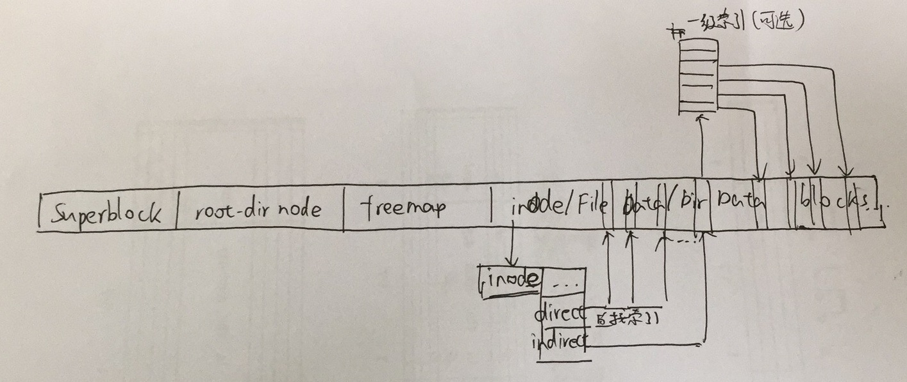

判断题（20分）
- 在进程控制块数据结构中，必须为进程建立内核栈结构，确保进程可以得到操作系统的可靠服务和管理等支持。（√）
以下解释摘自ucore docs Lab4：
每个线程都有一个内核栈，并且位于内核地址空间的不同位置。对于内核线程，该栈就是运行时的程序使用的栈；而对于普通进程，该栈是发生特权级改变的时候使保存被打断的硬件信息用的栈。uCore在创建进程时分配了2个连续的物理页（参见memlayout.h中KSTACKSIZE的定义） 作为内核栈的空间。这个栈很小，所以内核中的代码应该尽可能的紧凑，并且避免在栈上分配大的数据结构，以免栈溢出，导致系统崩溃。kstack记录了分配给该进程/线程的内核栈的位置。主要作用有以下几点。首先，当内核准备从一个进程切换到另一个的时候，需要根据kstack 的值正确的设置好tss（可以回顾一下在实验一中讲述的 tss在中断处理过程中的作用），以便在进程切换以后再发生中断时能够使用正确的栈。其次，内核
栈位于内核地址空间，并且是不共享的（ 每个线程都拥有自己的内核栈） ，因此不受到mm的管理，当进程退出的时候，内核能够根据kstack的值快速定位栈的位置并进行回收。
- 在进程切换过程中，进程上下文信息的保存与恢复过程必须在内核态完成。（√）
以下内容摘自ucore docs Lab4：
context：进程的上下文，用于进程切换（参见switch.S）。在uCore中，所有的进程在内核中也是相对独立的（例如独立的内核堆栈以及上下文等等） 。使用context保存寄存器的目的就在于在内核态中能够进行上下文之间的切换。实际利用context进行上下文切换的函数是在
kern/process/switch.S中定义的switch_to。
进程的上下文信息除了context以外，还包括页表信息（CR3寄存器），访问和修改这些内容需要特权指令，因此必须在内核态完成。
- 对于父进程而言，
fork()的返回值只能是子进程的pid号。（×）
如果fork()不成功，则会返回-1。
- 对于分属不同进程的线程A和线程B之间进行切换，必须要切换页表。（√）
同一进程的不同线程共享同一页表，但不同进程对应的页表一般是不同的。
- 在用户空间中实现的线程模型可以有效的避开操作系统调度带来的时间开销。（?）
我猜这是第11讲“进程和线程”中的内容。用户线程的优点是同一进程内的用户线程切换快，但是内核并不了解用户线程，因此只能按进程分配CPU时间；而内核线程的创建、终止和切换的代价相对较大（因为需要在内核态实现），但可以以线程为单位进行CPU时间分配。总的来说，避免操作系统的调度是不太可能的，所以我认为此题的描述是错误的。
2018.5.25 UPD：tsz同学认为此题题意不清。我同意这一观点。用户态实现的线程切换的时候的确可以不通过OS的进程调度，但是当然，完全避开OS的调度是不太可能的。
2018.12.19 UPD：评论区酒和弦的回复提醒了我，“避开操作系统调度带来的时间开销”的意思不一定是真的要避开操作系统的调度，而是用用户线程调度替代OS线程调度。这的确可以节省时间开销。[1]不过我仍然认为这道题的含义不明确，所以现在我把答案改成了？
- 对于应用程序而言，编译器生成的程序地址是虚拟地址，由操作系统建立段/页表完成虚实地址转换。（√）
好像确实是这么回事。
- 对于采用段页式的x86而言，CPU访问一个虚拟地址时，如TLB访问缺失，则需先通过页表，再通过段表才能找到对应的物理地址。（×）
反了，是先通过段表，再通过页表。
- 通过动态链接库和操作系统的页表设置，可以让多个不同的应用程序运行时共用一个库函数（如
printf等）的代码实现。（√）
反正就是可以通过页表设置映射到同一块物理内存。OS本身的代码也是这么操作的。
- 当设置好GDT（全局描述符表）的内容：然后CPU执行
lgdt指令加载GDT；接着立刻执行incl 0x80指令时，CPU将查找GDT并完成虚拟地址0x80到线性地址的转换。（×）
这道题的表述比较模糊不清。不过据说这个描述是错误的，因为里面没有提到对GDT项指向的段寄存器的更新。
- 在32位计算机系统中，由于4GB内存普遍存在，导致虚拟内存管理已经不再有存在的必要。（×）
这种说法显然有很多问题，比如：
- 4GB仍然很不够用
- 虚拟内存管理的功能不止有增加“虚拟”内存，还有细粒度的对内存访问权限和内存共享的管理
- 对于实时系统中的优先级反转（反置）问题，可通过优先级继承算法或优先级天花板算法来解决。（√）
这是第15讲“处理机调度”中的内容。优先级继承算法的思路是，占有资源的低优先级进程继承申请资源的高优先级进程的优先级；而优先级天花板算法的思路是，占有资源进程的优先级和所有可能申请该资源的进程的最高优先级相同。
- 信号量机制可实现基于条件变量的管程机制，反之亦然。（√）
信号量和条件变量是等价的（也就是它们可以互相实现）。
- 在多CPU系统中，仅通过CPU中断使能和屏蔽指令，就可实现对临界区代码的互斥保护。（×）
因为有多个CPU，因此使能单个CPU的中断完全不能保证互斥保护。
- 在银行家算法中，不安全状态不一定会造成死锁。（√）
- 操作系统中的虚拟文件系统屏蔽了底层具体文件系统的差异性，给上层应用提供了统一的访问接口。（√）
这是很原理性的话了。显然是对的。
- 在Linux中，存在不需要把数据保存到磁盘上的文件系统，比如
/proc文件系统，其作用是给应用程序提供一种内核信息的访问通道。（√）
是的。以下内容摘自深入理解linux系统下proc文件系统内容：
Linux系统上的/proc目录是一种文件系统，即proc文件系统。与其它常见的文件系统不同的是，/proc是一种伪文件系统（也即虚拟文件系统），存储的是当前内核运行状态的一系列特殊文件，用户可以通过这些文件查看有关系统硬件及当前正在运行进程的信息，甚至可以通过更改其中某些文件来改变内核的运行状态。
基于/proc文件系统如上所述的特殊性，其内的文件也常被称作虚拟文件，并具有一些独特的特点。例如，其中有些文件虽然使用查看命令查看时会返回大量信息，但文件本身的大小却会显示为0字节。此外，这些特殊文件中大多数文件的时间及日期属性通常为当前系统时间和日期，这跟它们随时会被刷新（存储于RAM中）有关。
为了查看及使用上的方便，这些文件通常会按照相关性进行分类存储于不同的目录甚至子目录中，如/proc/scsi目录中存储的就是当前系统上所有SCSI设备的相关信息，/proc/N中存储的则是系统当前正在运行的进程的相关信息，其中N为正在运行的进程（可以想象得到，在某进程结束后其相关目录则会消失）。
大多数虚拟文件可以使用文件查看命令如cat、more或者less进行查看，有些文件信息表述的内容可以一目了然，但也有文件的信息却不怎么具有可读性。不过，这些可读性较差的文件在使用一些命令如apm、free、lspci或top查看时却可以有着不错的表现。
- 在当前的计算机系统中，存在计算能力比CPU还快的外设。（√）
我也不知道到底是什么外设……不过我大胆猜测这里指的是GPU。不过，即使是CPU和GPU的比较，这个说法仍然不见得是很严谨的。
造成GPU和CPU根本差别的原因在于不同的目标需求：GPU假设运行其上的工作都是高度可并行的，而CPU需要同时很好的支持并行和顺序操作。于是，CPU需要大的片上缓存和复杂的控制逻辑，GPU则利用多线程并行运行节省了片上的大缓存，同时针对一簇线程执行同一套控制逻辑。因此，在高度并行化且数据规模巨大的应用下，GPU可以获得很高的浮点运算性能，然而如果问题无法良好映射到某个合适的并行模型或当数据规模较小时，SIMT就无法发挥并行的优势，CPU与GPU之间的数据交换也会大大降低运算效率。不过，后一个问题在刚刚发布的CUDA4.0中已经通过GPUDirect2.0得到了改进)。
作者：王洋子豪
链接：https://www.zhihu.com/question/19584781/answer/12292363
来源：知乎
著作权归作者所有。商业转载请联系作者获得授权，非商业转载请注明出处。
- DMA机制允许外设不经过CPU进行数据传输。（√）
以下内容摘自直接内存访问：
直接内存访问（Direct Memory Access，DMA）是计算机科学中的一种内存访问技术。它允许某些电脑内部的硬件子系统（电脑外设），可以独立地直接读写系统内存，而不需中央处理器（CPU）介入处理 。在同等程度的处理器负担下，DMA是一种快速的数据传送方式。很多硬件的系统会使用DMA，包含硬盘控制器、绘图显卡、网卡和声卡。
- 循环扫描算法（C-SCAN）对硬盘访问带来的好处在U盘上不存在。（√）
循环扫描算法是对扫描算法的改进。如果对磁道的访问请求是均匀分布的，当磁头到达磁盘的一端，并反向运动时落在磁头之后的访问请求相对较少。这是由于这些磁道刚被处理，而磁盘另一端的请求密度相当高，且这些访问请求等待的时间较长，为了解决这种情况，循环扫描算法规定磁头单向移动。例如，只自里向外移动，当磁头移到最外的被访问磁道时，磁头立即返回到最里的欲访磁道，即将最小磁道号紧接着最大磁道号构成循环，进行扫描。（磁盘调度算法）
对于U盘和SSD等随机访问的Flash半导体存储器，采用FCFS（先来先服务）调度策略更高效。 因为Flash的半导体存储器的物理结构不需要考虑寻道时间和旋转延迟，可直接按I/O请求的先后顺序服务。（https://www.nowcoder.com/questionTerminal/64fe6441b3fe47708803354979645a36）
- 访问频率置换算法（Frequency-based Replacement）的基本思路是，在短周期中使用LFU算法，而在长周期中使用LRU算法。（×）
其实我现在还没有学到这里，但似乎这个描述反了，应该是短周期使用LRU，长周期使用LFU。
填空题（20分）
21
在基于x86-32的ucore操作系统中，一般函数调用的参数通过（1.1）传递，系统调用的参数通过（1.2）传递，将系统调用号存放在（1.3），通过（1.4）指令进入内核态。此时还应该保存执行现场，需要在trapframe里保存（1.5）、（1.6）、（1.7）等信息（填三项即可）。
- 栈
- 寄存器和栈
- eax寄存器
int 0x80- 通用寄存器
- EFLAGS寄存器
- EIP
以下内容摘自系统调用和函数参数传递：
系统调用参数传递：
- x86_32
- 通过中断（int 0x80）来实现
- 寄存器 eax 中存放系统调用号，同时系统调用返回值也存放在 eax 中
- 当系统调用参数小于等于6个时，参数则必须按顺序放到寄存器 ebx，ecx，edx，esi，edi ，ebp中
- 当系统调用参数大于6个时，全部参数应该依次放在一块连续的内存区域里，同时在寄存器 ebx 中保存指向该内存区域的指针
- x86_64
- 通过中断（syscall）指令来实现
- 寄存器 eax 中存放系统调用号，同时系统调用返回值也存放在 eax 中
- 当系统调用参数小于等于6个时，参数则必须按顺序放到寄存器 rdi，rsi，rdx，r10，r8，r9中
- 当系统调用参数大于6个时，全部参数应该依次放在一块连续的内存区域里，同时在寄存器 ebx 中保存指向该内存区域的指针
函数参数传递：
- x86_32
- C调用约定（即用__cdecl关键字说明）按从右至左的顺序压参数入栈，由调用者把参数弹出栈。
- x86_64
- 当参数少于7个时， 参数从左到右放入寄存器: rdi, rsi, rdx, rcx, r8, r9。当参数为7个以上时， 前6个与前面一样， 但后面的依次从"右向左"放入栈中。
struct trapframe的定义如下（摘自kern/trap/trap.h）：
1 | struct trapframe { |
可以看出，trapframe中保存的信息包括：
- 通用寄存器（
tf_regs，其中保存了edi、esi、ebp、ebx、edx、ecx和eax） - 中断错误码（
err） - eip（指令指针）
- cs（代码段寄存器）
- EFLAGS寄存器
- esp（栈寄存器，可选）
- ss（堆栈段寄存器，可选）
22
（2.1）是一种将不同文件名链接至同一个文件的机制，它可以使同一文件具有多个不同的名字，而文件系统只存在一个文件内容的副本。（2.2）和原文件共享一个相同的inode号（文件在文件系统上的唯一标识）。若原文件删除了，则（2.3）不能访问它指向的原文件，而（2.4）则是可以的。（2.5）可以跨越磁盘分区，但（2.6）不具备这个特性。
- 链接
软链接硬链接- 软链接
- 硬链接
- 软链接
- 硬链接
以下内容摘自Linux软连接和硬链接：
Linux链接分两种，一种被称为硬链接（Hard Link），另一种被称为符号链接（Symbolic Link）。默认情况下，ln命令产生硬链接。
【硬连接】
硬连接指通过索引节点来进行连接。在Linux的文件系统中，保存在磁盘分区中的文件不管是什么类型都给它分配一个编号，称为索引节点号(Inode Index)。在Linux中，多个文件名指向同一索引节点是存在的。一般这种连接就是硬连接。硬连接的作用是允许一个文件拥有多个有效路径名，这样用户就可以建立硬连接到重要文件，以防止“误删”的功能。其原因如上所述，因为对应该目录的索引节点有一个以上的连接。只删除一个连接并不影响索引节点本身和其它的连接，只有当最后一个连接被删除后，文件的数据块及目录的连接才会被释放。也就是说，文件真正删除的条件是与之相关的所有硬连接文件均被删除。
【软连接】
另外一种连接称之为符号连接（Symbolic Link），也叫软连接。软链接文件有类似于Windows的快捷方式。它实际上是一个特殊的文件。在符号连接中，文件实际上是一个文本文件，其中包含的有另一文件的位置信息。
更详细的解释可以参见关于硬链接和软连接（符号链接）的区别。
2018.5.25 UPD：经过wj同学的提示，我发现不知为何2抽风写错了。共享inode号的应该是硬链接。
23
RAID是一种机制，即把多块独立的硬盘按某种方式组合，形成硬盘阵列，从而提供比单块硬盘更快的访问性能或更可靠的数据存储能力。组成磁盘阵列的不同方式称为RAID级别，其中，（3.1）级别没有数据冗余存储功能，而（3.2）的数据可靠性在所有的RAID级别中是最高的。RAID 5是一种存储性能、数据安全和存储成本兼顾的磁盘阵列组成方式。它至少需要（3.3）块硬盘。当RAID5的一个磁盘数据发生损坏后，可利用剩下的数据和相应的（3.4）信息去恢复被损坏的数据。
- RAID 0
- RAID 6
- 3
- 校验
- RAID-0：磁盘条带化
- 把数据块分成多个子块，存储在独立的磁盘中
- 通过独立磁盘上并行数据块访问来提供更大的磁盘带宽
- RAID-1：磁盘镜像
- 向两个磁盘写入相同的数据，从任何一个磁盘读取
- RAID-4：带校验的磁盘条带化
- 数据块级的磁盘条带化+专用奇偶校验磁盘
- RAID-5：带分布式校验的磁盘条带化
- 分摊校验磁盘的带宽限制
- 把校验和分布在各个磁盘上
- RAID-6：每组条带块有两个冗余块，允许两个磁盘错误
24
信号提供了异步处理事件的一种方式。例如，用户在终端按下“Ctrl-C”键，会产生可使当前进程终止的SIGINT信号。每一个信号对应一个（4.1）数，定义在头文件<signal.h>中。信号处理行为可由三种方式可供选择：（4.2）、（4.3）、（4.4）。
- 整
- 捕获
- 忽略
- 屏蔽
这部分是第20讲“死锁和进程通信”里的，但是我几乎都忘掉了……总之，信号和“信号号”的对应关系很类似于中断和中断号的关系，但是并没有一个明确的名称，所以我觉得回答“整数”是可以的。（参考https://blog.csdn.net/jnu_simba/article/details/11746217）
问答题（60分）
25. 银行家算法（10分）
下面是采用银行家算法的操作系统在某一时刻的资源分配状态。
Allocation矩阵：
| A | B | C | D | |
|---|---|---|---|---|
| P0 | 0 | 0 | 1 | 2 |
| P1 | 1 | 0 | 0 | 0 |
| P2 | 1 | 3 | 5 | 4 |
| P3 | 0 | 6 | 3 | 2 |
| P4 | 0 | 0 | 1 | 4 |
Max矩阵：
| A | B | C | D | |
|---|---|---|---|---|
| P0 | 0 | 0 | 1 | 2 |
| P1 | 1 | 7 | 5 | 0 |
| P2 | 2 | 3 | 5 | 6 |
| P3 | 0 | 6 | 5 | 2 |
| P4 | 0 | 6 | 5 | 6 |
Available矩阵：
| A | B | C | D |
|---|---|---|---|
| 1 | 5 | 2 | 0 |
请回答下列问题：
- 请写出当前时刻的Need矩阵的内容是什么？
- 当前时刻，系统是否处于安全状态？
- 接下来，如果进程P1发出一个请求(0, 4, 2, 0)。这个请求能否立刻被满足？
要获得Need矩阵，只需将Allocation矩阵从Max矩阵中减去。于是得到：
Need矩阵：
| A | B | C | D | |
|---|---|---|---|---|
| P0 | 0 | 0 | 0 | 0 |
| P1 | 0 | 7 | 5 | 0 |
| P2 | 1 | 0 | 0 | 2 |
| P3 | 0 | 0 | 2 | 0 |
| P4 | 0 | 6 | 4 | 2 |
下面判断系统是否处于安全状态：
- Finish[P0] = false，Need[P0] <= Available；于是释放P0资源，Available += [0, 0, 1, 2] = [1, 5, 3, 2]，Finish[P0] = true
- Finish[P2] = false，Need[P2] <= Available；于是释放P2资源，Available += [1, 3, 5, 4] = [2, 8, 8, 6]，Finish[P2] = true
- Finish[P1] = false，Need[P1] <= Available；于是释放P1资源，Available += [1, 0, 0, 0] = [3, 8, 8, 6]，Finish[P1] = true
- Finish[P3] = false，Need[P3] <= Available；于是释放P3资源，Available += [0, 6, 3, 2] = [3, 14, 11, 8]，Finish[P3] = true
- Finish[P4] = false，Need[P4] <= Available；于是释放P4资源，Available += [0, 0, 1, 4] = [3, 14, 12, 12]，Finish[P4] = true
- 算法结束，系统处于安全状态
如果P1发出请求为Request = [0, 4, 2, 0]：
- Request <= Need[P1]，资源申请未超过限度
- Request <= Available，不需等待
- 假设资源已分配，更新各矩阵内容：
Allocation矩阵：
| A | B | C | D | |
|---|---|---|---|---|
| P0 | 0 | 0 | 1 | 2 |
| P1 | 1 | 4 | 2 | 0 |
| P2 | 1 | 3 | 5 | 4 |
| P3 | 0 | 6 | 3 | 2 |
| P4 | 0 | 0 | 1 | 4 |
Available矩阵：
| A | B | C | D |
|---|---|---|---|
| 1 | 1 | 0 | 0 |
Need矩阵：
| A | B | C | D | |
|---|---|---|---|---|
| P0 | 0 | 0 | 0 | 0 |
| P1 | 0 | 3 | 3 | 0 |
| P2 | 1 | 0 | 0 | 2 |
| P3 | 0 | 0 | 2 | 0 |
| P4 | 0 | 6 | 4 | 2 |
然后判断当前状态是否为安全状态：
- Finish[P0] = false，Need[P0] <= Available；于是释放P0资源，Available += [0, 0, 1, 2] = [1, 1, 1, 2]，Finish[P0] = true
- Finish[P2] = false，Need[P2] <= Available；于是释放P2资源，Available += [1, 3, 5, 4] = [2, 4, 6, 6]，Finish[P2] = true
- Finish[P1] = false，Need[P1] <= Available；于是释放P1资源，Available += [1, 4, 2, 0] = [3, 8, 8, 6]，Finish[P1] = true
- Finish[P3] = false，Need[P3] <= Available；于是释放P3资源，Available += [0, 6, 3, 2] = [3, 14, 11, 8]，Finish[P3] = true
- Finish[P4] = false，Need[P4] <= Available；于是释放P4资源，Available += [0, 0, 1, 4] = [3, 14, 12, 12]，Finish[P4] = true
- 算法结束，系统处于安全状态
由于分配后系统仍然处于安全状态，这个请求可以立刻被满足。
26. 同步互斥（10分）
通过软件机制可正确实现互斥机制。
（1）
下列二线程互斥机制的伪码实现是否有错？请给出原因分析，如果有错请给出反例。
1 | INITIALIZATION: |
事实上这就是第17讲“同步互斥”中“基于软件的同步方法”中介绍的第一种错误做法。这种做法满足“忙则等待”，但不满足“空闲则入”。线程i和j必须轮流访问临界区；如果i始终不进入临界区，则j无法进入，会发生饥饿。
我有时会忽略“空闲则入”这条规则，事实上这也是临界区实现中非常重要的一条规则。
（2）
下列N线程互斥机制的伪码实现是否有误？请给出原因分析，如果有错请给出反例。
1 | INITIALIZATION: |
这种做法是错误的。假设有两个进程，i<j，Ti正在执行num[i] = max(num[0], ..., num[n-1]) + 1;时，已计算得max(num[0], ..., num[n-1])==0；此时切换到Tj，也计算得max(num[0], ..., num[n-1])==0，随后num[j]=1，Tj先进入临界区。随后切换到Ti，计算得到num[i]=1，检查后Ti也进入临界区，违反互斥。
据说修改num[i]前后应用bool变量choose[i]保护起来，在后面枚举其他进程时先要等待choose[i]完成。这样就可以解决问题了。
（上述解释来自学长答案；这种做法和Eisenberg & Mcquire还是挺不像的）
27. 信号量与管程（15分）
1 | IMPLEMENTATION: |
（1）
请说明管程的特征。上述管程实现是哪种类型的管程？
管程的特征：
- 管程是一种用于多线程互斥访问共享资源的程序结构
- 采用面向对象方法，简化了线程间的同步控制
- 任一时刻最多只有一个线程执行管程代码
- 正在管程中的线程可临时放弃管程的互斥访问，等待事件出现时恢复
很显然，这就是ucore Lab7中实现的管程，属于Hoare语义。在这种语义下，如果条件变量上有进程正在等待，发出signal的进程会立刻进入等待状态，将控制权交给被唤醒的进程。
（2）
在上述伪码中，如果有3个线程a，b，c需要访问管程，并会使用管程中的2个条件变量cv[0]，cv[1]。
- 请问
cv[i]->count的含义是什么？cv[i]->count是否可能<0，是否可能>1？请举例或说明原因。 - 请问
mt->next_count的含义是什么？mt->next_count是否可能<0，是否可能>1？请举例或说明原因。
cv[i]->count的含义是在该条件变量上等待的线程数。显然这个数不可能<0。如果有多于1个线程执行了cond_wait(cv[i])操作且还未被唤醒，这个数是可能>1的。
mt->next_count的含义是发出signal后暂时进入等待状态的线程的个数。显然，这个数不可能<0。假设b执行cond_wait(cv[0])开始等待，c也执行cond_wait(cv[0])开始等待。a进入管程，执行cond_signal(cv[0])，唤醒b，a进入signal队列；b被唤醒后，立即执行cond_signal(cv[0])，唤醒c，b也进入signal队列。此时mt->next_count=2。
28. stride调度算法（10分）
请描述stride调度算法的思路？stride算法的特征是什么？stride调度算法是如何避免stride溢出问题的？
思路：
- 每个进程有两个属性：
- pass：当前位置
- stride：一次要前进的步数
- stride ∝ 1 / priority
- 选择进程的方法：
- 执行当前pass最小的进程
- 该进程的pass += stride
- 重复该过程
特征：
- stride越小（优先级越高），被调度的次数会越多
- 基于优先级（priority-based）
- 调度选择是确定的（deterministic）
避免stride溢出的方法：
- uint32存储、int32相减比较
- 最大步进值-最小步进值<无符号整数/2
- 具体可参见Piazza帖子https://piazza.com/class/i5j09fnsl7k5x0?cid=357
29. 文件系统（15分）
（1）
试以图示描述ucore操作系统中的SFS文件系统的文件组织方式。

呃，这个怎么描述，不会啊。。。
总之据说是链式分配……
2018.5.25 UPD：
在ssh同学的提醒下，我想起来SFS使用的是索引分配这回事了……
（2）
下面是SFS的磁盘索引节点数据结构定义。
1 | struct sfs_disk_inode { |
假定ucore里SFS_NDIRECT的取值是16，而磁盘上数据块大小为1KB。请计算这时ucore支持的最大文件大小。请给出计算过程。（这样可给步骤分）
以下内容摘自ucore docs Lab8：
SFS中的磁盘索引节点代表了一个实际位于磁盘上的文件。首先我们看看在硬盘上的索引节点的内容：
1 | struct sfs_disk_inode { |
通过上表可以看出，如果inode表示的是文件，则成员变量direct[]直接指向了保存文件内容数据的数据块索引值。indirect间接指向了保存文件内容数据的数据块，indirect指向的是间接数据块（indirect block），此数据块实际存放的全部是数据块索引，这些数据块索引指向的数据块才被用来存放文件内容数据。
默认的，ucore里SFS_NDIRECT是12，即直接索引的数据页大小为12 * 4k = 48k；当使用一级间接数据块索引时，ucore 支持最大的文件大小为 12 * 4k + 1024 * 4k = 48k + 4m。数据索引表内，0表示一个无效的索引，inode里blocks表示该文件或者目录占用的磁盘的block的个数。indiret为0时，表示不使用一级索引块。（因为 block 0用来保存super block，它不可能被其他任何文件或目录使用，所以这么设计也是合理的）
显然，在题设中，最大可能的文件大小为使用一级间接数据块索引时，为(16 + 1KB/4B) * 1KB = 272KB。